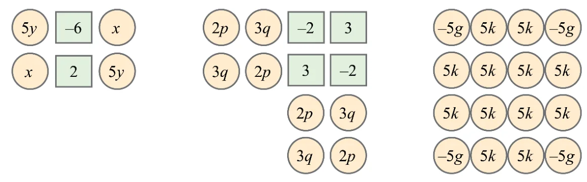
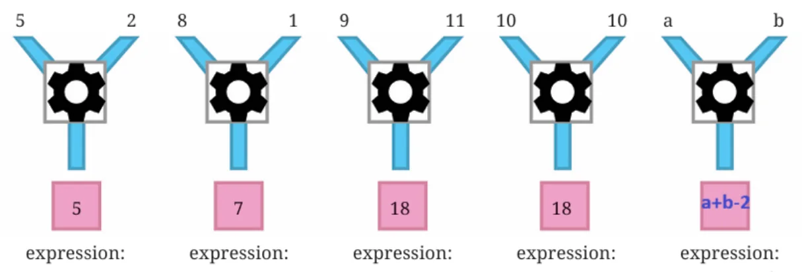
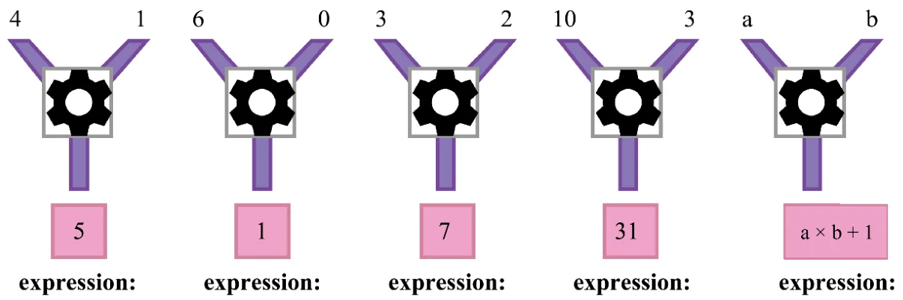

Page No. 93-94 — Figure it Out
- Add the numbers in each picture below. Write their corresponding expressions and simplify them. Try adding the numbers in each picture in a couple different ways and see that you get the same thing.

Ans: Some of the ways are
(i) Method 1: Group by Like Terms
\(5y + x + x + 5y + (-6) + 2\)
\(= (5y + 5y) + (x + x) + (-6 + 2)\)
\(= 10y + 2x - 4\)
Method 2: Group by Rows
Top row: \(5y + (-6) + x\)
Bottom row: \(x + 2 + 5y\)
Combine: \((5y + 5y) + (x + x) + (-6 + 2)\)
\(= 10y + 2x - 4\)
Final Number: \(10y + 2x - 4\)
Try some other ways!
(ii) Method 1: Group by Term Type
\(2p\) appears 4 times: \(8p\)
\(3q\) appears 4 times: \(12q\)
Final number: \(3 + (-2) + (-2) + 3 = 2\)
Total: \(8p + 12q + 2\)
Method 2: Group by Columns
Column 1: \(2p + 3q\)
Column 2: \(3q + 2p\)
Column 3: \((-2) + 3 + 2p + 3q = 1 + 2p + 3q\)
Column 4: \(3 + (-2) + 3q + 2p = 1 + 3q + 2p\)
Final Number: \(8p + 12q + 2\)
Try some other ways!
(iii) Method 1: Group by Term Type
\(-5g\) appears 4 times: \(-20g\)
\(5k\) appears 12 times: \(60k\)
Total: \(-20g + 60k\)
Method 2: Group by Columns
First column: \(-5g + 5k + 5k + (-5g) = -10g + 10k\)
Middle columns 2 and 3 all \(5k = 8 \times 5k = 40k\)
Last column: \(-5g + 5k + 5k + (-5g) = -10g + 10k\)
Total of all: \(= -10g + 10k + 40k - 10g + 10k\)
\(= -20g + 60k\)
Try some other ways!
- Simplify each of the following expressions:
- \(p + p + p + p\), \(p + p + p + q\), \(p + q + p - q\)
- \(p - q + p - q\), \(p + q - p + q\)
- \(p + q - (p + q)\), \(p - q - p - q\)
- \(2d - d - d - d\), \(2d - d - d - c\)
- \(2d - d - (d - c)\), \(2d - (d - d) - c\)
- \(2d - d - c - c\)
Ans:
(a) \(4p\), \(3p + q\), \(2p\)
(b) \(2p - 2q\), \(2q\)
(c) \(0\), \(-2q\)
(d) \(-d\), \(-c\)
(e) \(c\), \(2d - c\)
(f) \(d - 2c\)
Some simplifications of algebraic expressions are done below. The expression on the right–hand side should be in its simplest form.
- Observe each of them and see if there is a mistake.
- If you think there is a mistake, try to explain what might have gone wrong.
- Then, simplify it correctly.
Ans:
| Sr. No. | Expression | Simplest Form | Correct Simplest form |
|---|---|---|---|
| 1 | \(3a + 2b\) | \(5\) | \(3a + 2b\) |
| 2 | \(3b - 2b - b\) | \(0\) | \(0\) |
| 3 | \(6(p + 2)\) | \(6p + 8\) | \(6p + 12\) |
| 4 | \((4x + 3y) - (3x + 4y)\) | \(x + 5\) | \(x - y\) |
| 5 | \(5 - (2 - 6z)\) | \(3 - 6z\) | \(3 + 6z\) |
| 6 | \(2 + (x + 3)\) | \(2x - 6\) | \(x + 5\) |
| 7 | \(2y + (3y - 6)\) | \(-y + 6\) | \(5y - 6\) |
| 8 | \(7p - p + 5q - 2q\) | \(7p + 3q\) | \(6p + 3q\) |
| 9 | \(5(2w + 3x + 4w)\) | \(10w + 15x + 20w\) | \(30w + 15x\) |
| 10 | \(3j + 6k + 9h + 12\) | \(3(j + 2k + 3h + 4)\) | \(3j + 6k + 9h + 12\) |
| 11 | \(4(2r + 3s + 5)\) | \(-20 - 8r - 12s\) | \(8r + 12s + 20\) |
Page No. 95
Take a look at all the corrected simplest forms (i.e. brackets are removed, like terms are added, and terms with only numbers are also added). Is there any relation between the number of terms and the number of letter–numbers these expressions have?
Ans:
| Sr. No. | (A) Expression | (B) Correct Simplest form | (C) Number of terms in (B) | (D) Number of letters in (B) |
|---|---|---|---|---|
| 1 | \(3a + 2b\) | \(3a + 2b\) | 2 | 2 |
| 2 | \(3b - 2b - b\) | \(0\) | 1 | 0 |
| 3 | \(6(p + 2)\) | \(6p + 12\) | 2 | 1 |
| 4 | \((4x + 3y) - (3x + 4y)\) | \(x - y\) | 2 | 2 |
| 5 | \(5 - (2 - 6z)\) | \(3 + 6z\) | 2 | 1 |
| 6 | \(2 + (x + 3)\) | \(x + 5\) | 2 | 1 |
| 7 | \(2y + (3y - 6)\) | \(5y - 6\) | 2 | 1 |
| 8 | \(7p - p + 5q - 2q\) | \(6p + 3q\) | 2 | 2 |
| 9 | \(5(2w + 3x + 4w)\) | \(30w + 15x\) | 2 | 2 |
| 10 | \(3j + 6k + 9h + 12\) | \(3j + 6k + 9h + 12\) | 4 | 3 |
| 11 | \(4(2r + 3s + 5)\) | \(8r + 12s + 20\) | 3 | 2 |
No. of letters \(\leq\) no of terms
Page No. 96
Find the formulas of the number machines below and write the expression for each set of inputs.
Ans: (i) Formula: Two is subtracted from the sum of the two numbers.
Algebraic expression \(= a + b - 2\)

(ii) Formula: One is added to the multiplication of two numbers.
Algebraic expression\(= (a \times b) + 1 = ab + 1\)
4th expression: \(10 \times 3 + 1 = 30 + 1 = 31\)
5th expression: \(a \times b + 1\)

Page No. 97
Use this to find what design appears at positions 99, 122, and 148.
Ans:
- Design C appears at position 99.
- Design B appears at position 122.
- Design A appears at position 148.
Page No. 99
Will this always happen? How do you show this?
Ans: Let’s build a similar 3×3 grid with a Centre number a.
| \(a - 7\) | ||
| \(a - 1\) | \(a\) | \(a + 1\) |
| \(a + 7\) |
Here, the sum is
\(a - 7 + a - 1 + a + a + 1 + a + 7 = 5a\) (5times the number in the Centre.)
Page No. 101.
What are these numbers in Step 3 and Step 4?
Ans:
Step 3: No. of matchsticks placed horizontally-3
No. of matchsticks placed diagonally-4
Step 4: No. of matchsticks placed horizontally-4
No. of matchsticks placed diagonally-5
How does the number of matchsticks change in each orientation as the steps increase? Write an expression for the number of matchsticks at Step ‘y’ in each orientation. Do the two expressions add up to \(2y + 1\)?
Ans:
For horizontal placement: 1, 2, 3, 4, …
At the yth step, the number of horizontal matchsticks \(= y\).
For diagonal placement: 2, 3, 4, 5, …
At the yth step, the number of diagonal matchsticks \(= y + 1\).
Yes.